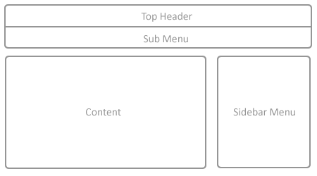
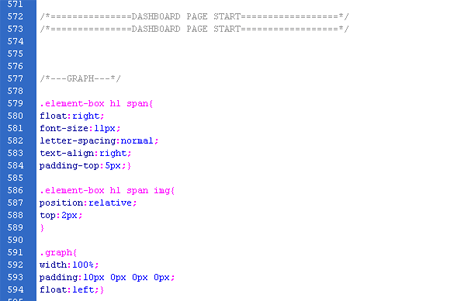

Created: x/x/xxxx
By: Akshay Kumar
Email: akshay@infynitix.com
akshay_thakur05@yahoo.com
Thank you for purchasing my theme. If you have any questions that are beyond the scope of this help file, please feel free to email via my user page contact form here
View our website : www.infynitix.com
This theme is a fluid layout with 3 columns. It renders almost all the admin panel functionalities like :- graphs, forms stuff, user interface elements, plugins, notifications, error pages and much more. This theme is divided into three major frames --

A. Top Header is defined in CSS as - - - - - ".header".
B. Sub Menu is defined in CSS as - - - - - ".tabs-contenor".
C. Main is defined in CSS as - - - - - "#main". this div contains two divs "#right-menu" and "#content".
The source code becomes self-explanatory with the proper use of comments, The general template structure is the same throughout the template. Here is the general structure.
Eternity Admin!!! The designer’s choice for excellence. This template showcases the perfect way to design and develop a website with hundreds of possible features and plugins. It offers different layouts to design a dashboard or a webpage. It uses Jquery in order to make the interface light, responsive and ready to use. Eternity Admin renders custom layouts, error pages and themes which can be used with any website. One of the main features of Eternity Admin is that it is browser compatible. With more than 100 different buttons styles and grid layouts, this template becomes one of the most powerful designer’s toolkits.
The Eternity Admin toolkit supports multiple features like Calendars, Contact Lists, HTML Player and wizards. In order to match with the leading technology, the mobile version of Eternity Admin is also available and also it is browser independent. Eternity Admin also offers an image gallery with latest graphics.
Eternity Admin’s left menu template is available with vast range of features such as expandable menu controls, search capability and so on. It allows extracting templates for Google maps and different notifications.
I'm using nine CSS files in this theme.
1). reset.css
2). style.css
3). custom.css
4). data-table.css
5). elfinder.css
6). fullcalender.css
7). ui-slider.css
8). jquery.fancybox.css
9). wysiwyg.css
The first one ( reset.css ) is a generic reset file. Many browsers interpret the default behavior of html elements differently. By using a general reset CSS file, we can work round this. This file also contains some general styling, such as anchor tag colors, font-sizes, custom fonts etc. Keep in mind, that these values might be overridden somewhere else in the file.
The second file ( style.css ) contains all of the specific stylings for the page. The file is separated into sections using comments like this

/*===============TOP HEADER AND MENU==================*/
/*===============TOP HEADER AND MENU==================*/
all stles for top header and menu
/*===============RIGHT MENU START==================*/
/*===============RIGHT MENU START==================*/
all stles for right menu
Rest of the css is used as per there naming conventions like data-table.css contains grid styles, elfinder.css contains file manager styles, fullcalendar.css contains calendar styles, etc.
This theme imports many Javascript files.
Once again, thank you so much for purchasing this theme. As I said at the beginning, I'd be glad to help you if you have any questions relating to this theme. I'll do my best to assist. If you have a more general question relating to the themes on ThemeForest, you might consider visiting the forums and asking your question in the "Item Discussion" section.
Akshay Kumar